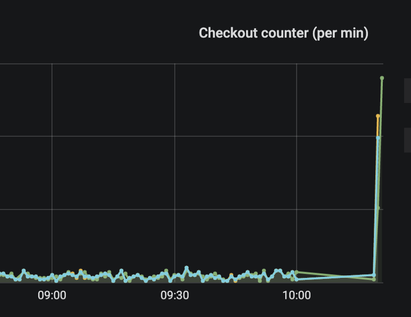
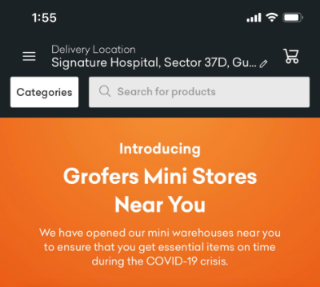
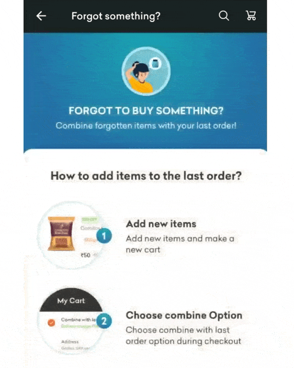
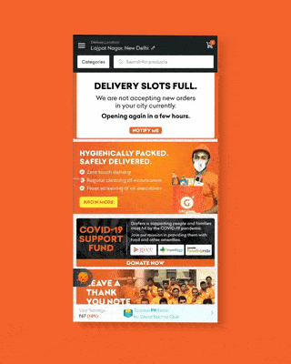
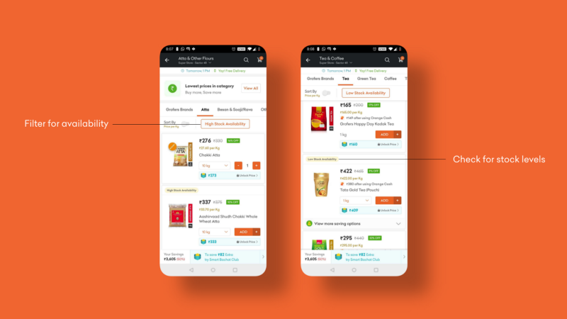

Updates that make grocery buying experience seamless, safe, and hygienic

In March, COVID-19 changed a lot of things for the world. Grofers has been no exception.
Unlike many business and economic scenarios that can be estimated or predicted for, COVID-19 stands as a tough exception. What this means for us is that our larger focus for March has been on only two things:
- Indian households receive their essential supplies of grocery and household items without hiccups.
- And they get it in a way that’s safe and hygienic.
To achieve this, we have made some important decisions, some of which can be read through in our official covid-19 microsite and in this recent blog post. However, if you haven’t been able to follow through the updates, we understand.
So in this blog, we’d like to share what we have been shipping, the decisions we have made, and what you can expect in the coming days and weeks.
1. We introduced contactless deliveries
We care a lot about the safety and hygiene of the products that we deliver to our customers. With covid-19 and its exponential spread around the globe, this has become even more important for us.
We are solving two problems:
- Spreading awareness (and importance) of contactless deliveries.
- Making it easier to opt-in so maximum users avail it.

On March 17th, we launched zero-touch delivery: an intuitive, easy-to-opt-in, and safe way for you to get your groceries and household essentials.
All our customers can opt for zero-touch delivery through the Grofers app or by making a phone call to their delivery partner.
Note: we also trained our delivery partners in parallel about the importance and significance of zero-touch delivery along with the best practices to make it possible.
The program now serves 6000+ households in Gurgaon, Bangalore, Mumbai, and Kolkata, as we continue to improve and bring zero-touch to as many people as possible. If you have more ideas for improvement, please email us at zerotouch@grofers.com.
Recommended reading: Your coronavirus grocery questions, answered by experts by Vox.
2. Fixed slot opening times
Every day, our app is seeing over 1.5 million people trying to order. Given the constraints on how many people we can cater to, we are only able to serve 1 out of 8 customers today.
The outcome? Server crashes. Below is an image of the increase in checkouts the moment we started taking orders. While it is every company’s dream to see these surges, the reality is not fun. Engineers love scale but hate sudden scale.

In the beginning we resorted to randomizing slot opening times to balance the queue prioritization and also manage the load on servers.
We’ve now addressed these scalability concerns and most areas have available slots. In the case all slots are full, a time is shown to the user when slots will open up again so they can plan their purchase.
3. We have introduced group orders for societies
Along with the benefits of zero-touch delivery, we are partnering with RWAs and societies to supply essential grocery items with safer, low-cost, and faster access.
Societies can now go to the Grofers app and order as a group, which helps us serve more households with faster delivery time.
To achieve this, we have created a simple sign-up flow. After confirmation, societies, and RWAs will have a custom catalog stocked with essentials and the customers will be able to see the slots.
This will allow society and RWAs to reserve delivery slots for their orders, can order for as low as INR 200 (compared to INR 800 for individual orders) and can avail free delivery on all orders above INR 800 (compared to INR 1200 for individual orders).
On our end, orders are pre-identified since customers use RWA/Society’s interface on the app automatically (based on your location). Moreover, all of these orders will be dropped at the defined location in the RWA with zero-touch practice in place.
The delivery confirmation is provided with a photo-proof and signature from a security guard, individually for each order delivered.
4. Launching dark stores
To increase the supply of groceries and reach out to more people efficiently, we need more space and manpower at the local level. To achieve this, we have now launched Dark Stores.

Dark stores are mini warehouses around our users that help them get better (and faster) access to grocery essentials. On our side, we are providing technology and inventory at scale.
The first three stores are already up in Gurugram and Ghaziabad with more on the way.
If you — or someone you know — has space and are willing to run a dark store- please get in touch at express@grofers.com.
5. We now let users edit their carts, multiple times
In our communications recently, we have been urging all our customers to follow three simple rules: a) don’t hoard b) don’t panic c) plan ahead.

The underlying anxiety behind this is a lack of control.
- What would happen if I ran out of my essential supplies?
- What if there’s no stock (or less stock)?
To address these anxieties, our team has now introduced the option to edit your cart and add items multiple times.
Forgot to add atta to your order? You can add it and combine it with your last order. Just remembered that you needed to include a beverage for your daughter? No problem, you can make that change too.
Multiple edits to your cart can be made until 8 hours before your scheduled delivery. Whatever you add to your order, gets delivered to you as a whole.
We will continue to improve this feature and are slowly rolling it out to all our users.
6. We are limiting the quantity of an item in an order
To help avoid hoarding and encourage our users to plan ahead, we have also started limiting the number of items a user can purchase in an order.

The choice for customers might be limited for some time at Grofers. There is still plenty of supply to go around, but we have made ourselves leaner to be able to serve more customers. Moreover, this allows us to serve everyone equally — irrespective of any economic factors prohibiting an order.
We hope our users think of themselves — and their families — as part of a big community. This is now more important than ever.
7. Users can now get notified when our service resumes
In the last few weeks, we have faced certain operational challenges due to a nationwide lockdown.

In certain areas, our warehouses were shut owing to some miscommunication, and while a good number of them are back up and running now, we are still working with authorities to resume some of our offices.
In between these challenges, we continued to have a huge influx of orders. This led to a high promise time, cancellations, and a few more hiccups.
To navigate it and put our users’ needs at the top, we have introduced notifications for our operational status.
What this means is that a customer can fill their cart and ask to be notified — if the operations in their city or area are paused. As soon as we resume our services, they get a notification, can then place their order, and we’ll get it delivered in under 72 hours.
This helps us tackle two problems: getting the essentials faster to the ones who need it the most. And second, it helps set expectations with our users on what they can expect — thereby creating transparency around our operations.
8. We have introduced stock levels for essential items
There’s an underlying theme in all the decisions we are making right now: how can we introduce transparency in the decisions we are making and address our customer’s anxieties?
To put it simply, our teams are collectively solving for the following problem statement: “In what ways can we create transparency in the grocery buying process?”
One such exercise led us to solve for anxiety about stock availability around grocery essentials.
Now, all our users right now can filter essential products based on their stock availability. They’ll also see the products tagged as “high stock availability” or “low stock availability” depending on their stock levels.

We hope this gives our customers better control over their plans for buying grocery essentials during covid-19.
9. Thank a delivery hero
In these tough times, our delivery partners are the heroes who have stepped up and taken charge. They are following all the precautions and are ensuring deliveries across India happen in the safest and most hygienic way — no loose ends.
While they man the front, they have also motivated us to keep pushing and innovating so we can better serve the millions of households that depend on grocery delivery right now. We are truly proud and thankful.
So now all our users can thank them too by simply visiting our app and leaving a thank you note. We regularly pass these messages to our delivery partners for whom, this serves as a consistent source of motivation and a higher call for service.
10. Ensuring high sanitary standards in warehousing
In compliance with recommendations from W.H.O, all of our partners and employees are screened for temperature and use facial masks (that are replaced every 2 days).
They are also sanitizing hands at regular intervals with soap and using sanitizer often. Watch the video to see how:
11. Ensuring stable livelihood
For us, a stable livelihood of the community we impact is important. In line with that, here are some important steps we have taken:
- We have announced incentive programs for people who could not continue working with us due to operational issues.
- We continue to work with local authorities to get permission for work without any hindrance.
- Partnered with NGOs to deliver food & groceries directly to their facilities. We have also launched an initiative that directly supports the families most hit by the COVID-19 pandemic. You can donate at grofers.com/donate.
- We are also working with multiple other delivery partners to ensure they continue finding a livelihood.
There are more upcoming changes and initiatives we’ll be launching as we find balance in this new reality. To stay updated, bookmark this post, and we’ll continue adding the announcements here.